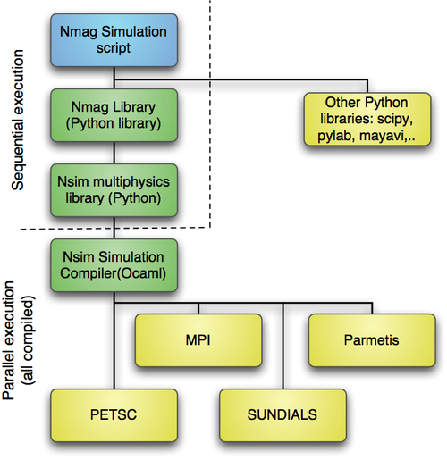

3. Background
In this section, we list some background information on the simulation
package, some explanation of the philosophy behind it (which may
explain some of the user interface choices that have been made) and
explanation of some terms that are relevant.
3.1. Architecture overview

The Nmag environment that is described in this manual is shown as the blue box labelled Nmag Simulation Script. This is importing the nmag library – which is a Python library. This in turn, is built on the Nsim library Python module. The nsim Python module uses compiled code which is written in Objective Caml. At this level the execution can be parallel and this is also used to link together existing libraries (yellow boxes).
3.2. The nsim library
Nmag is the high-level user interface that provides micromagnetic
capabilities to a general purpose finite element multi-physics field
theory library called nsim. Therefore, many of the concepts used by
Nmag are inherited from nsim.
This manual documents the high-level Nmag userinterface, it does not
document nsim. Some of the internal details of nsim are explained
in http://arxiv.org/abs/arXiv:0907.1587.
3.3. Fields and subfields
3.3.1. Field
The Field is the central entity within the The nsim library. It represents physical
fields such as:
- magnetisation (usually a 3d vector field),
- the magnetic exchange field (usually a 3d vector field), or
- magnetic exchange energy (a scalar field).
A field may contain degrees of freedom of different type, which belong
to different parts of a simulated object. For example, the
magnetisation field may contain the effective magnetisation (density)
for more than one type of magnetic atoms, which may make up different
parts of the object studied. In order to deal with this, we introduce
the concept of Subfields: A Nmag/nsim field can be regarded as a
collection of subfields. Most often, there only is one subfield in a
field, but when it makes sense to group together multiple conceptually
independent fields (such as the effective magnetisation of the iron
atoms in a multilayer structure and that of some other magnetic metal
also present in the structure), a field may contain more than one
subfield: In particular, the magnetisation field M may contain
subfields M_Fe and M_Co.
The question what subfields to group together is partly a question of
design. For Nmag, the relevant choices have been made by the Nmag
developers, so the user should not have to worry about this.
3.3.2. Subfield
Each field contains one or more Subfields. For example, a
simulation with two different types of magnetic material (for example
Fe and Dy), has a field m for the normalised magnetisation and
this would contain two subfields m_Fe and m_Dy.
(It is partly a question of philosophy whether different material
magnetisations are treated as subfields in one field, or whether they
are treated as two fields. For now, we have chosen to collect all the
material magnetisations as different subfields in one field.)
Often, a field contains only one subfield and this may carry the same
name as the field.
3.4. Fields and Subfields in Nmag
3.4.1. Example: one magnetic material
Assuming we have a simulation of one material with name PermAlloy (Py),
we would have the following Fields and Subfields:
| Field |
Subfield |
Comment |
|---|
| m |
m_Py |
normalised magnetisation |
| M |
M_Py |
magnetisation |
| H_total |
H_total_Py |
total effective field |
| H_ext |
H_ext |
external (applied) field (only one) |
| E_ext |
E_ext_Py |
energy density of Py due to external field |
| H_anis |
H_anis_Py |
crystal anisotropy field |
| E_anis |
E_anis_Py |
crystal anisotropy energy density |
| H_exch |
H_exch_Py |
exchange field |
| E_exch |
E_exch_Py |
exchange energy |
| H_demag |
H_demag |
demagnetisation field (only one) |
| E_demag |
E_demag_Py |
demagnetisation field energy density for Py |
| phi |
phi |
scalar potential for H_demag |
| rho |
rho |
magnetic charge density (div M) |
| H_total |
H_total_Py |
total effective field |
It is worth noting that the names of the fields are fixed whereas the
subfield names are (often) material dependent and given by
- the name of the field and the material name (joined through ‘_‘)
if there is one (material-specific) subfield for every magnetisation or
- the name of the field if there is only one subfield (such as the
demagnetisation field or the applied external field)
This may seem a little bit confusing at first, but is easy to
understand once one accepts the general rule that the
material-dependent quantities - and only those - contain a
material-related suffix. All atomic species experience the
demagnetisation field in the same way, so this has to be H_demag
(i.e. non-material-specific). On the other hand, anisotropy depends on
the atomic species, so this is H_anis_Py, and therefore, the total
effective field also has to be material-specific: H_total_Py. (All
this becomes particularly relevant in systems where two types of
magnetic atoms are embedded in the same crystal lattice.)
3.4.2. Example: two magnetic materials
This table from the Example: two different magnetic materials shows
the fields and subfields when more than one material is involved:
| Field |
Subfield(s) |
Comment |
|---|
| m |
m_Py, m_Co |
normalised magnetisation |
| M |
M_Py, M_Co |
magnetisation |
| H_total |
H_total_Py, H_total_Co |
total effective field |
| H_ext |
H_ext |
external (applied) field (only one) |
| E_ext |
E_ext_Py, E_ext_Co |
energy density of Py due to external field |
| H_anis |
H_anis_Py, H_anis_Co |
crystal anisotropy field |
| E_anis |
E_anis_Py, E_anis_Co |
crystal anisotropy energy density |
| H_exch |
H_exch_Py, H_exch_Co |
exchange field |
| E_exch |
E_exch_Py, E_exch_Co |
exchange energy |
| H_demag |
H_demag |
demagnetisation field (only one) |
| E_demag |
E_demag_Py, E_demag_Co |
demagnetisation field energy density |
| phi |
phi |
scalar potential for H_demag |
| rho |
rho |
magnetic charge density (div M) |
| H_total |
H_total_Py, H_total_Co |
total effective field |
3.4.3. Obtaining and setting subfield data
Data contained in subfields can be written to files (using
save_data), can be probed at particular points in space
(probe_subfield, probe_subfield_siv), or can be obtained from all
sites simultaneously (get_subfield). Some data can also be set (in
particular the applied field H_ext using set_H_ext and all the
subfields belonging to the field m using set_m).
3.4.4. Primary and secondary fields
There are two different types of fields in nmag: primary and
secondary fields.
Primary fields are those that the user can set
arbitrarily. Currently, these are the (normalised) magnetisation m
and the external field H_ext (which can be modified with set_m
and set_H_ext).
Secondary fields (which could also be called dependent fields) can
not be set directly from the user but are computed from the primary
fields.
3.5. Mesh
In finite element calculations, we need a mesh to define the geometry
of the system. For development and debugging purposes, nsim includes
some (at present undocumented) capabilities to generate toy meshes
directly from geometry specifications, but for virtually all nsim
applications, the user will have to use an external tool to generate a
(tetrahedral) mesh file describing the geometry.
3.5.1. Node
Roughly speaking, a mesh is a tessellation of space where the support
points are called mesh nodes. nmag uses an unstructured mesh
(i.e. the cells filling up three-dimensional space are tetrahedra).
3.5.2. node id
Each node in the finite element mesh has an associated node id. This
is an integer (starting from 0 for the first node).
This information is used when defining which node is connected to
which (see Finite element mesh generation for more details), and
when defining the sites at which the field degrees of freedom are
calculated.
3.5.3. node position
The position (as a 3d vector) in space of a node.
3.6. Site
A Mesh has nodes, and each node is identified by its node id.
If we use first order basis functions in the finite element
calculation, then a site is exactly the same as a node. In
micromagnetism, we almost always use first order basis functions
(because the requirement to resolve the exchange length forces us to
have a very fine mesh, and usually the motivation of using higher
order basis functions is to make the mesh coarser).
If we were to use second or higher order base functions, then we
have more sites than nodes. In a second order basis function
calculation, we identify sites by a tuple of node id.
3.7. SI object
We are using a special SI object to express physical entities (see
also SI). Let us first clarify some terminology:
- physical entity
- A pair (a,b) where a is a number (for example 10) and b is a product
of powers of dimensions (for example m^1s^-1) which we need to
express a physical quantity (in this example 10 m/s).
- dimension
- SI dimensions: meters (m), seconds (s), Ampere (A), kilogram (kg), Kelvin
(K), Mol (mol), candela (cd). These can be obtained using the units attribute of the SI object.
- SI-value
- for a given physical entity (a,b) where a is the numerical value and
b are the SI dimensions, this is just the numerical value a (and can be
obtained with the value attribute of the SI object).
- Simulation Units
- The dimensionless number that expressed an entity within the
simulation core. This is irrelevant to the user, except in highly
exotic situations.
There are several reasons for using SI objects:
- In the context of the micromagnetic simulations, the use of SI
objects avoids ambiguity as the user has to specify the right
dimensions and - where possible - the code will complain if these
are unexpected units (such as in the definition of material
parameters).
- The specification of units is more important when the
micromagnetism is extended with other physical phenomena (moving
towards multi-physics calculations) for which, in principle, the
software cannot predict what units these will have.
- Some convenience in having a choice of how to specify, for example,
magnetic fields (i.e. A/m, T/mu0, Oe). See also comments
in set_H_ext.
3.7.1. Library of useful si constants
The si name space in nmag provides the following constants:
“”“Some useful SI constants”“”
import math
from lib import SI
kilogram = SI(1.0,[“kg”,1]) #: The kilogram
meter = SI(1.0,[“m”,1]) #: The meter
metre = meter # alternative spelling
Ampere = SI(1.0,[“A”,1]) #: The Ampere
Kelvin = SI(1.0,[“K”,1]) #: The Kelvin
second = SI(1.0,[“s”,1]) #: The second
candela = SI(1.0,[“cd”,1]) #: The candela
mol = SI(1.0,[“mol”,1]) #: The mol
#specific units for magnetism
Newton = kilogram*meter/second**2 #: Newton
mu0 = SI(4.0e-7*math.pi, “N/A^2”) #: vacuum permeability mu0
Tesla = kilogram/Ampere/second**2 #: Tesla
Gauss = 1e-4*kilogram/Ampere/second**2 #: Gauss
Oersted=Gauss/mu0 #: Oersted
Oe=Oersted #: Oersted
gamma0 = SI(-2.2137286285040001e5, “m/A s”)#: gyromagnetic ratio gamma0
# units: degrees/nanosecond: Useful to specify the stopping_dm_dt
degrees_per_ns = SI(math.pi/180.0)/SI(1e-9, “s”)
# other units and constants
Joule = SI(“J”)
bohr_magneton = 9.2740094980e-24*Joule/Tesla # Bohr magneton
positron_charge = SI(1.6021765314e-19, “C”)
electron_charge = -positron_charge
boltzmann_constant = SI(1.3806504e-23, “J/K”)
plank_constant = 6.6260689633e-34*Joule*second
reduced_plank_constant = plank_constant/(2*math.pi)
To express the magnetisation in A/m equivalent to the polaration of 1
Tesla, we could thus use:
from nmag import si
myM = 1.5*si.Tesla/si.mu0
The command reference for SI provides some more details on the behaviour of SI objects.
3.8. Terms
3.8.1. Stage, Step, iteration, time, etc.
We use the same terminology for hysteresis loops as OOMMF (stage, step, iteration, time) and extend this slightly:
| step: | A step is the smallest possible change of the fields. This
corresponds (usually) to carrying out a time integration of the
system over a small amount of time dt. Step is an integer starting
from 0.
If we minimise energy (rather than computing the time development
exactly), then a step may not necessarily refer to progressing the
simulation through real time.
|
|---|
| iteration: | Another term for Step (deprecated)
|
|---|
| stage: | An integer to identify all the calculations carried out at one
(constant) applied magnetic field (as in OOMMF).
|
|---|
| time: | The time that has been simulated (typically of the order of
pico- or nanoseconds).
|
|---|
| id: | This is an integer (starting from 0) that uniquely identifies
saved data. I. e. whenever data is saved, this number will increase by
1. It is available in the h5 data file and the Data files (.ndt) data files,
and thus allows
to match data in the ndt files with the corresponding (spatially resolved)
field data in the h5 file.
|
|---|
| stage_step: | The number of steps since we have started the current stage.
|
|---|
| stage_time: | The amount of time that has been simulated since we started this stage.
|
|---|
| real_time: | The amount of real time the simulation has been running
(this is the [wall] execution time) and therefore typically of the
order of minutes to days.
|
|---|
| local_time: | A string (human readable) with the local time. Useful in
data files to see when an entry was saved.
|
|---|
| unix_time: | The number of (non-leap) seconds since 1.1.1970 - this is
the same information as local_time but represented in a more computer
friendly way for computing differences.
|
|---|
3.8.2. Some geek-talk deciphered
- nmag uses some object orientation in the high-level user interface
- presented here. There are a few special terms used in object
orientation that may not be familiar and of which we attempt to give
a very brief description:
| method: | A method is just a function that is associated to an object. |
|---|
3.9. Solvers and tolerance settings
There are a number of linear algebra solvers and one solver for
ordinary differential equations (ODEs) in nmag:
two solvers for the calculation of the demagnetisation
field. Default values can be modified when creating the Simulation
object (this user interface is not final – if you really feel you
would like to change the defaults, please contact the nmag team so
we can take your requirements into account in the next release).
one solver for the system of algebraic equations that results from
the time integrator’s implicit integration scheme.
(We need to document the default settings and how to modify this.)
the ODE integrator.
Setting of the tolerances for the ODE integrator can be done with
set_params. An example of this is shown in section Example: Timestepper tolerances.
We expect that for most users, the tolerances of the ODE integrator
are most important (see Example: Timestepper tolerances) as this greatly affects
the performance of the simulation.
3.10. The equation of motion: the Landau-Lifshitz-Gilbert equation
The magnetisation evolution, as computed by the advance_time or the
hysteresis methods of the Simulation class, is determined by the
following equation of motion:
dM/dt = -llg_gamma_G * M x H + llg_damping * M x dM/dt,
which is the Landau-Lifshitz-Gilbert equation (we often use the abbreviation
“LLG”), a vector equation, where M, H and dM/dt are three
dimensional vectors and x represent the vector product.
This equation is used to dermine the evolution of each component
of the magnetisation.
For example, if the system has two materials with name m1 and m2,
then the magnetisation has two components M_m1 and M_m2 and
the equations:
dM_m1/dt = -llg_gamma_G_m1 * M_m1 x H_m1 + llg_damping_m1 * M_m1 x dM_m1/dt,
dM_m2/dt = -llg_gamma_G_m2 * M_m2 x H_m2 + llg_damping_m2 * M_m2 x dM_m2/dt,
determine the dynamics of M_m1 and M_m2.
Here H_m1 and H_m2 are the effective fields relative to the two
components, while with dM_m1/dt and dM_m2/dt we denote the two time
derivatives. The constant llg_gamma_G_XX in front of the precession term
in the LLG equation is often called “gyromagnetic ratio”, even if usually,
in physics, the gyromagnetic ratio of a particle is the ratio between its
magnetic dipole moment and its angular momentum (and has units A s/kg).
It is then an improper nomenclature, but it occurs frequently in the
literature. The llg_damping_XX constant is called damping constant.
Notice that these two constants are specified on a per-material basis.
This means that each material has its own pair of constants
(llg_gamma_G_m1, llg_damping_m1) and
(llg_gamma_G_m2, llg_damping_m2).
The two constants are specified when the corresponding material is created
using the MagMaterial class.